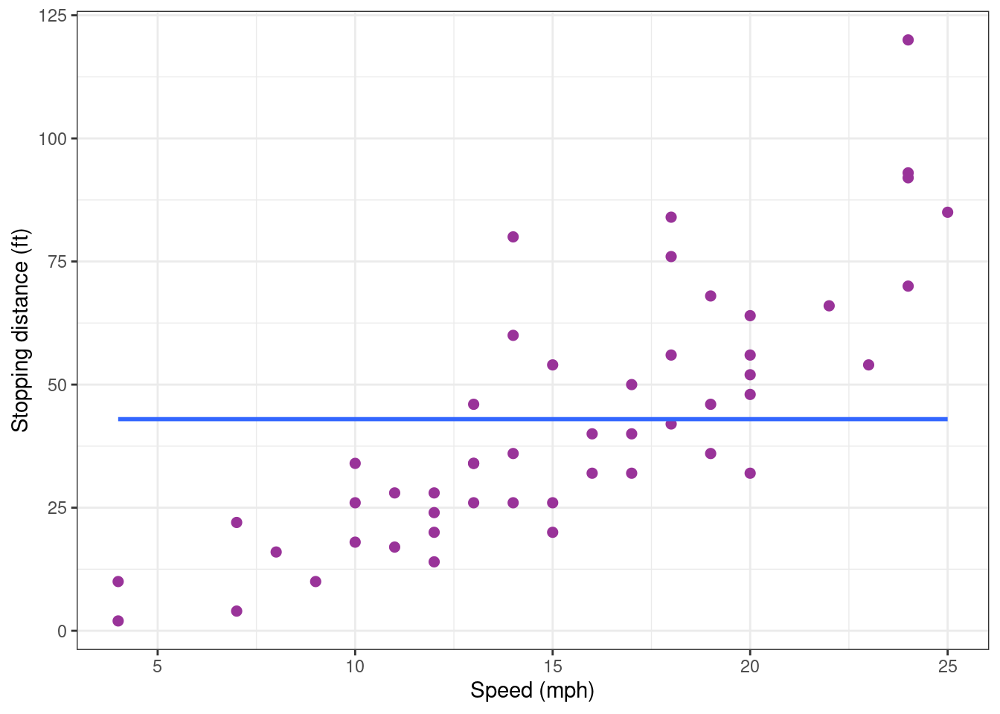
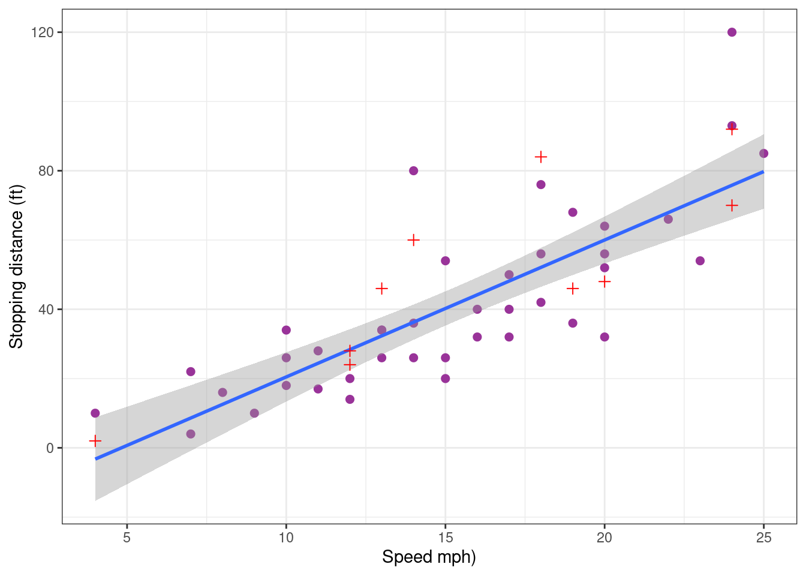
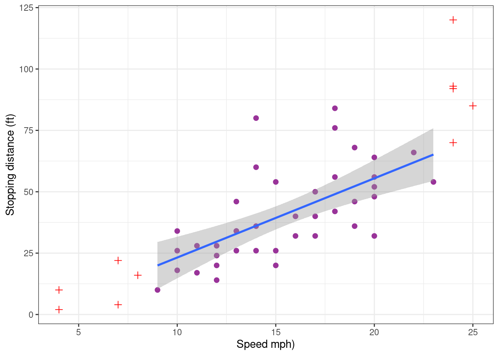
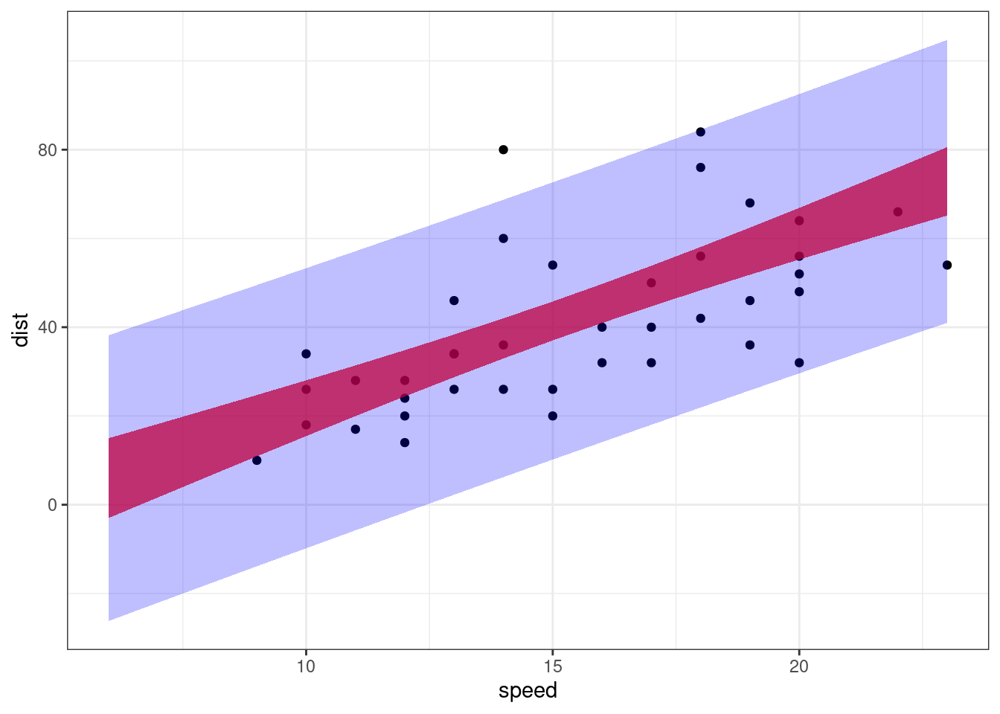
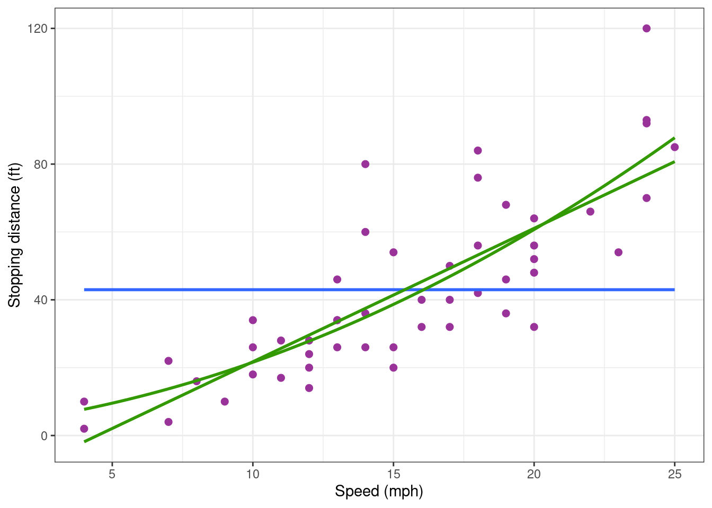
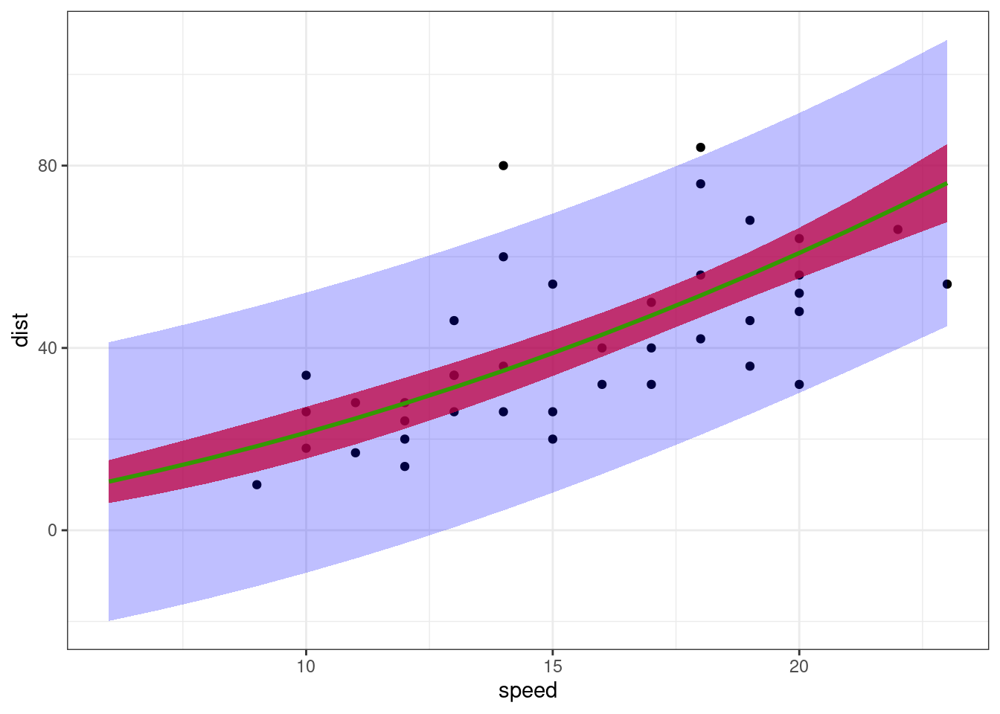
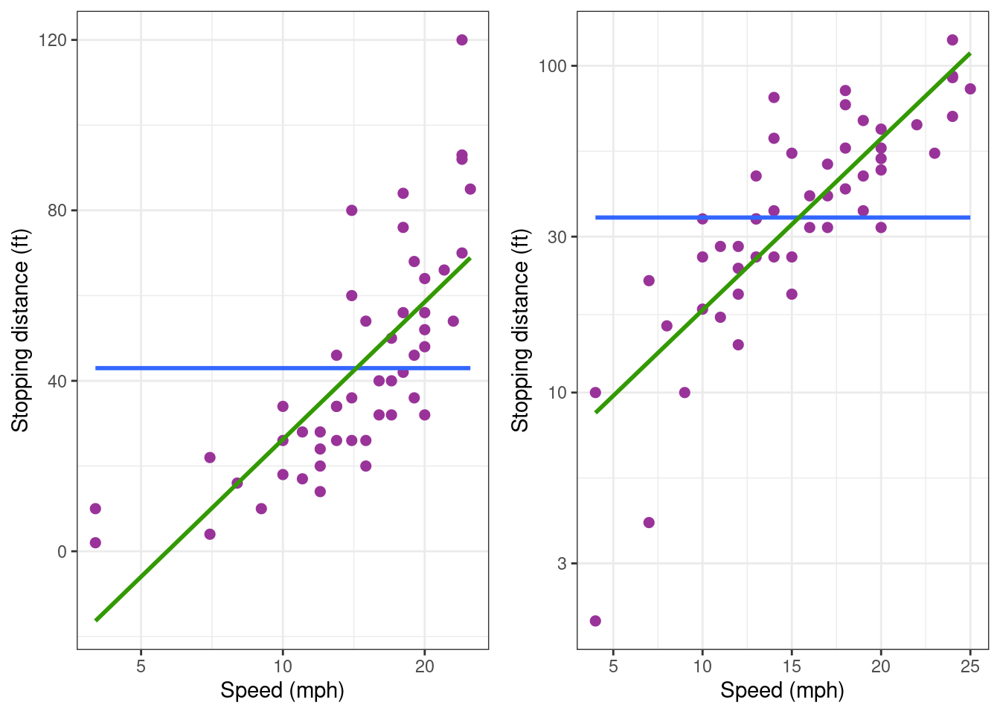
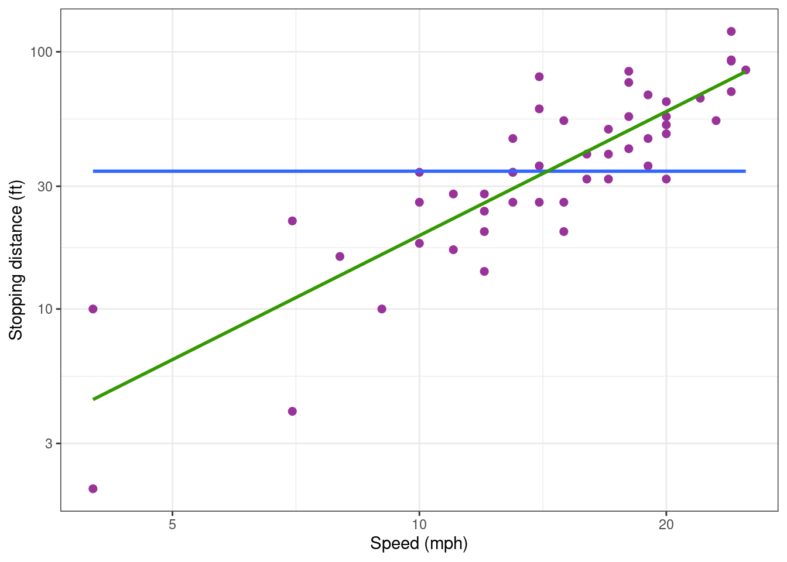

library(tidyverse)
library(gridExtra)
library(ggfortify) # extend some ggplot2 features
theme_set(theme_bw())Polynomial Regression
Lecture Notes
Preliminary
Only functions from R-base and stats (preloaded) are required plus packages from the tidyverse for data representation and manipulation.
1 The ‘cars’ data example
The data set cars gives the speed of cars and the distances taken to stop (Note that the data were recorded in the 1920s). The data frame consists of 50 observations (rows) and 2 variables (columns): speed (mph), stopping distance (ft)
data(cars)
cars %>% rmarkdown::paged_table()Scatter plots can help visualize any relationship between the explanatory variable speed (also called regression variable, or predictor) and the response variable dist.
Show the code
cars_plot <-
cars %>%
ggplot() + aes(x = speed, y = dist) +
geom_point(size = 2, colour="#993399") + xlab("Speed (mph)") + ylab("Stopping distance (ft)")
cars_plotBased on this data, our objective is to build a regression model of the form
y_j = f(x_j) + \varepsilon_j \quad ; \quad 1 \leq j \leq n
where (x_j, 1 \leq j \leq n) and (y_j, 1 \leq j \leq n) represent, respectively, the n measured speeds and distances and where (\varepsilon_j, 1 \leq j \leq n) is a sequence of residual errors. In other words, \varepsilon_j represents the difference between the distance predicted by the model f(x_j) and the observed distance y_j.
We will restrict ourselves to polynomial regression, by considering functions of the form \begin{aligned} f(x) &= f(x ; c_0, c_1, c_2, \ldots, c_d) \\ &= c_0 + c_1 x + c_2 x^2 + \ldots + c_d x^d \end{aligned}
Building a polynomial regression model requires to perform the following tasks:
- For a given degree d,
- estimate the parameters of the model,
- assess the validity of the model,
- evaluate the predictive performance of the model
- Compare the different possible models and select the best one(s).
2 Fitting polynomial models
2.1 Fitting a polynomial model as a linear model
Remark that the polynomial regression model y_j = c_0 + c_1 x_j + c_2 x^2_j + \ldots + c_{d} x^{d}_j + \varepsilon_j can be written in a matrix form y = X\beta + \varepsilon where y = \left( \begin{array}{c} y_1 \\ y_2 \\ \vdots \\ y_n \end{array}\right), \quad X = \left( \begin{array}{cccc} 1 & x_1 & \cdots & x_1^{d} \\ 1 & x_2 & \cdots & x_2^{d} \\ \vdots & \vdots & \ddots & \vdots \\ 1 & x_n & \cdots & x_n^{d} \end{array}\right), \quad \beta = \left( \begin{array}{c} c_0 \\ c_1 \\ \vdots \\ c_{d} \end{array}\right), \quad \varepsilon = \left( \begin{array}{c} \varepsilon_1 \\ \varepsilon_2 \\ \vdots \\ \varepsilon_n \end{array}\right)
Then, X\beta is the vector of predicted values and varepsilon the vector of residual errors. Then, all what is said in the lecture about linear regression model can be applied.
2.2 Fitting a polynomial of degree 0
A very basic model considers that the observations (y_j) fluctuates around a constant value c_0:
y_j = c_0 + \varepsilon_j y_j = c_0 + \varepsilon_j
lm0 <- lm(dist ~ 1, data = cars)
lm0
Call:
lm(formula = dist ~ 1, data = cars)
Coefficients:
(Intercept)
42.98 The coefficient c_0 is the empirical mean
mean(cars$dist)[1] 42.98Looking how the model fits the data is more than enough for concluding that this model is miss-specified.
Show the code
cars_plot <- cars_plot +
geom_smooth(method = "lm", formula = y ~ 1, se = FALSE)
cars_plot
Indeed, a clear increasing trend is visible in the data while the model assumes that there is no trend. We therefore reject this first model.
2.3 Fitting a polynomial of degree 1
2.3.1 Numerical results
The scatter plot above rather suggests a linearly increasing relationship between the explanatory and response variables. Let us therefore assume now a linear trend which is mathematically represented by a polynomial of degree 1:
y_j = c_0 + c_1 x_j + \varepsilon_j \quad ; \quad 1 \leq j \leq n
We can then fit this model to our data using the function lm:
lm1 <- lm(dist ~ speed, data = cars)
coef(lm1)(Intercept) speed
-17.579095 3.932409 These coefficients are the intercept and the slope of the regression line, but more informative results about this model are available:
summary(lm1)
Call:
lm(formula = dist ~ speed, data = cars)
Residuals:
Min 1Q Median 3Q Max
-29.069 -9.525 -2.272 9.215 43.201
Coefficients:
Estimate Std. Error t value Pr(>|t|)
(Intercept) -17.5791 6.7584 -2.601 0.0123 *
speed 3.9324 0.4155 9.464 1.49e-12 ***
---
Signif. codes: 0 '***' 0.001 '**' 0.01 '*' 0.05 '.' 0.1 ' ' 1
Residual standard error: 15.38 on 48 degrees of freedom
Multiple R-squared: 0.6511, Adjusted R-squared: 0.6438
F-statistic: 89.57 on 1 and 48 DF, p-value: 1.49e-12The slope c_1 is clearly statistically significant while the model explains about 65\% of the variability of the data. The confidence interval for c_1 confirms that an increase of the speed leads to a significant increase of the stopping distance.
confint(lm1) 2.5 % 97.5 %
(Intercept) -31.167850 -3.990340
speed 3.096964 4.7678532.3.2 Some diagnostic plots
The fact that the slope is significantly different from zero does not imply that this polynomial model of degree 1 correctly describes the data: at this stage, we can only conclude that a polynomial of degree 1 better explains the variability of the data than a constant model.
Diagnostic plots are visual tools that allows one to ``see’’ if something is not right between a chosen model and the data it is hypothesized to describe.
First, we can add the regression line to the plot of the data.
cars_plot <- cars_plot +
geom_smooth(method = "lm", formula = y ~ x, se = FALSE, colour="#339900")
cars_plotThe regression line describes pretty well the global trend in the data: based on this graphic, there is no reason to reject the model.
Several diagnostic plots are available for a lm object. The first two are a plot of residuals against fitted values and a normal QQ plot.
autoplot(lm1, which = 1:2) ## autoplot comes from ggfortifyThe residual plot shows a slight (decreasing and increasing) trend which suggests that the residuals are not identically distributed around 0. Furthermore, the QQ plot shows that the extreme residual values are not the extreme values of a normal distribution. It may be therefore necessary to improve the regression model.
2.3.3 The predictive performance of the model
Even if the model it somewhat miss-specified, it may have good predictive properties.
A common practice is to split the dataset into a 80:20 sample (training:test), then, build the model on the 80% sample and then use the model thus built to predict the reponse variable on test data.
Doing it this way, we will have the model predicted values for the 20% data (test). We can then see how the model will perform with this ``new’’ data, by comparing these predicted values with the original ones. We can alo check the stability of the prediction given by the model, by comparing these predicted values with those obtained previouly, when the complete data were used for building the model.
Let us first randomly define the training and test samples:
n <- nrow(cars)
is_train <- sample(c(TRUE, FALSE), n, prob = c(0.8, 0.2), replace = TRUE)
cars_training <- filter(cars, is_train)
cars_test <- filter(cars, !is_train)pred_testing_set <-
lm(dist ~ speed, data = cars_training) %>%
predict(cars_test)Show the code
cars_pred_plot <-
cars_training %>% ggplot() + aes(x = speed, y = dist) +
geom_point(size = 2, colour="#993399") + xlab("Speed mph)") + ylab("Stopping distance (ft)") +
geom_smooth(method = "lm", formula = y ~ x) +
geom_point(data = data.frame(cars_test, testing = pred_testing_set),
mapping = aes(x = speed, y = dist), size = 2, shape = 3, colour="red")
cars_pred_plot
On one hand, it is reassuring to see that removing part of the data has a very little impact on the predictions. On the other hand, the predictive performance of the model remains limited because of the natural variability of the data. Indeed, this model built with the training sample only explains 71 % of the variabilility of the new test sample.
R2_test <- cor(pred_testing_set, cars_test$dist)^2
R2_test[1] 0.7101874Let us see now how the model behaves with extreme values by defining as test sample the data points with the 5 smallest and the 5 largest speeds.
cars_training <- cars[c(6:45) ,]
cars_test <- cars[-c(6:45),]
pred_testing_set <-
lm(dist ~ speed, data = cars_training) %>%
predict(cars_test)Show the code
cars_pred_plot <-
cars_training %>% ggplot() + aes(x = speed, y = dist) +
geom_point(size = 2, colour="#993399") + xlab("Speed mph)") + ylab("Stopping distance (ft)") +
geom_smooth(method = "lm", formula = y ~ x) +
geom_point(data = data.frame(cars_test, testing = pred_testing_set),
mapping = aes(x = speed, y = dist), size = 2, shape = 3, colour="red")
cars_pred_plot
We see that the model now underestimate the stopping distance for the largest speeds. In conclusion, the model may be used with confidence for predicting the stopping distance for given speeds which are central values. Another model should probably be developed for predicting stopping distances for extreme speed values.
2.3.4 Confidence interval and prediction interval
Imagine we aim to predict the stopping distance for a speed x. Using the estimated coefficients of our polynomial model, the prediction will be
\hat{f}(x) = \hat{c}_0 + \hat{c}_1x
This prediction is an estimation since it is based on estimated coefficients \hat{c}_0 and \hat{c}_1. Then, the uncertainty on the prediction should be quantified by providing a confidence interval for f(x).
Since the model can be used for predicting the stopping distance for non extreme speeds, we will restrict ourselves to speeds between 6 and 23 mph.
alpha <- 0.05
new_x <- data.frame( speed = (6:23))
conf_inter <-
setNames(cbind(new_x,
predict(lm1, newdata = new_x, interval = "confidence", level = 1 - alpha)),
c("speed", "dist", "lwr", "upr"))
conf_inter %>% rmarkdown::paged_table()A prediction interval for a new measured distance y=f(x)+\varepsilon can also be computed. This prediction interval takes into account both the uncertainty on the predicted distance f(x) and the variability of the measure, represented in the model by the residual error e.
pred_inter <- setNames(cbind(new_x,
predict(lm1, newdata = new_x, interval = "prediction", level = 1 - alpha)),
c("speed", "dist", "lwr", "upr"))
pred_inter %>% rmarkdown::paged_table()Let us plot these two intervals.
Show the code
cars_training %>% ggplot() + aes(x = speed, y = dist) + geom_point() +
geom_ribbon(data = conf_inter, aes(ymin = lwr, ymax = upr), fill = "red" , alpha = 0.75) +
geom_ribbon(data = pred_inter, aes(ymin = lwr, ymax = upr), fill = "blue", alpha = 0.25)
These intervals are of very little interest and should not be used in practice. Indeed, we can see that both the confidence interval and the prediction interval contain negative values for small or moderate speeds, which is obviously unrealistic… We’ll see later how to transform the model and/or the data in order to take into account some constraints about the data.
2.4 Fitting a polynomial of degree 2
We can expect to better describe the extreme values by using a polynomial of higher degree. Let us therefore fit a polynomial of degree 2 to the data.
lm2 <- lm(dist ~ speed + I(speed^2), data = cars)
summary(lm2)
Call:
lm(formula = dist ~ speed + I(speed^2), data = cars)
Residuals:
Min 1Q Median 3Q Max
-28.720 -9.184 -3.188 4.628 45.152
Coefficients:
Estimate Std. Error t value Pr(>|t|)
(Intercept) 2.47014 14.81716 0.167 0.868
speed 0.91329 2.03422 0.449 0.656
I(speed^2) 0.09996 0.06597 1.515 0.136
Residual standard error: 15.18 on 47 degrees of freedom
Multiple R-squared: 0.6673, Adjusted R-squared: 0.6532
F-statistic: 47.14 on 2 and 47 DF, p-value: 5.852e-12Surprisingly, the 3 t-tests seem to indicate that none of the coefficients is statistically significant. This result should be considered with caution.Indeed, it does not mean that the three coefficients can be replaced by 0 (i.e. removed) in the model.
The difficulty of interpretating these p-values is due to the strong correlations that exist between the estimates \hat{c}_0, \hat{c}_1 and \hat{c}_2. It is recalled that the variance covariance matrix of the vector of estimates is \sigma^2(X^\prime X)^{-1}. We can then easily derive the correlation matrix from covariance matrix.
X <- model.matrix(lm2)
S <- solve(crossprod(X))
R <- cov2cor(S)
R (Intercept) speed I(speed^2)
(Intercept) 1.0000000 -0.9605503 0.8929849
speed -0.9605503 1.0000000 -0.9794765
I(speed^2) 0.8929849 -0.9794765 1.0000000We will see below how to use a sequence of orthogonal polynomials in order to get uncorrelated estimates.
The R-squared indicate that 66.7% of the variability of the data is explained by a polynomial of degree 2, instead of 65.1% with a polynomial of degree 1. On the other hand, the standard deviation of the residual error is 15.18 ft with this model instead of 15.38 ft with the previous one. These improvements are really too small to justify the use of a quadratic polynomial.
Nevertheless, plotting the data together with the fitted polynomial suggests that the extreme values are better predicted with a polynomial of degree 2 than with a straight line.
Show the code
cars_plot +
geom_smooth(method = "lm", formula = y ~ poly(x, 2, raw = TRUE), se = FALSE, colour="#339900")
The predictive performance of the model need to be assesed in order to confirm this property of the model. We can again use the 80% most central data points to build the model and test it on the 20% remaining data points.
Show the code
cars_plot +
geom_smooth(data = cars_training, method = "lm", formula = y ~ poly(x, 2, raw = TRUE), se = FALSE, colour="#339900")The shape of the polynomial is totally different when it is built using the training data only. That means that the model is quite unstable, depending strongly on some data values. Then, repeating the same experiment (under the same experimental conditions) would probably lead to significantly different results.
Such lack of reproducibility of the predictions reinforces our idea that this model should be rejected.
2.5 Fitting a polynomial without intercept
The stopping distance predicted by the model should be null when the speed is null. This constraint can easily be achieved by removing the intercept from the regression model: f(x) = c_1 x + c_2 x^2 + \ldots + c_d x^d Let us fit a regression model of degree 2 without intercept to our data.
lm2_no_inter <- lm(dist ~ 0 + speed + I(speed^2), data = cars)
coef(lm2_no_inter) speed I(speed^2)
1.23902996 0.09013877 We can check that the design matrix consists of the 2 columns (x_j) and (x_j^2).
X <- model.matrix(lm2_no_inter)
head(X) speed I(speed^2)
1 4 16
2 4 16
3 7 49
4 7 49
5 8 64
6 9 81We can plot the data with the predicted response f(x), confidence interval for f(x) and prediction intervals for new observations y.
Show the code
alpha <- 0.05
new_x <- data.frame( speed = (6:23))
fit <- data.frame(new_x, dist = predict(lm2_no_inter, newdata = new_x))
conf_inter <-
setNames(cbind(new_x,
predict(lm2_no_inter, newdata = new_x, interval = "confidence", level = 1 - alpha)),
c("speed", "dist", "lwr", "upr"))
pred_inter <-
setNames(cbind(new_x,
predict(lm2_no_inter, newdata = new_x, interval = "prediction", level = 1 - alpha)),
c("speed", "dist", "lwr", "upr"))
cars_training %>% ggplot() + aes(x = speed, y = dist) + geom_point() +
geom_ribbon(data = conf_inter, aes(ymin = lwr, ymax = upr), fill = "red" , alpha = 0.75) +
geom_ribbon(data = pred_inter, aes(ymin = lwr, ymax = upr), fill = "blue", alpha = 0.25) +
geom_line(data = fit, aes(x = speed, y = dist), colour="#339900", size = 1)
Confidence interval for f(x) now only contain positive values for any x>0 and is reduce to 0 when x=0.
On the other hand, prediction intervals for new observations still contain negative values. This is due to the fact that the residual error model is a constant error model y=f(x)+e, assuming that the variance of the error e does not depend on the predicted value f(x). This hypothesis doe not reflect the true phenomena and should be rejected. We will see that an appropriate alternative may consist in transforming the data.
2.6 Using orthogonal polynomials
Instead of defining each component of the regression model lm(dist ~ speed + I(speed^2) ), it is equivalent to define explicitly the regression model as a polynomial of degree 2
lm2_poly <- lm(dist ~ poly(speed, degree = 2, raw = TRUE), data = cars)
design_raw <- model.matrix(lm2_poly)
head(design_raw) (Intercept) poly(speed, degree = 2, raw = TRUE)1
1 1 4
2 1 4
3 1 7
4 1 7
5 1 8
6 1 9
poly(speed, degree = 2, raw = TRUE)2
1 16
2 16
3 49
4 49
5 64
6 81Results obtained with both methods are absolutely identical
coef(lm2_poly) (Intercept) poly(speed, degree = 2, raw = TRUE)1
2.4701378 0.9132876
poly(speed, degree = 2, raw = TRUE)2
0.0999593 We have seen that this model leads to highly correlated estimators of the coefficients of the model which make it difficult the interpretation of the results. Indeed, let X be the design matrix for a polynomial model of degree d, X = \left( \begin{array}{cccc} 1 & x_1 & \cdots & x_1^{d} \\ 1 & x_2 & \cdots & x_2^{d} \\ \vdots & \vdots & \ddots & \vdots \\ 1 & x_n & \cdots & x_n^{d} \end{array}\right) Then, the columns of X are highly correlated since (X^\prime X)_{kl} = \sum_{j=1}^n x_j^{k+l-2}
The option raw = FALSE (which is the default) allows to use an orthogonal basis of polynomial.
2.6.1 The Gram-Schmidt procedure
Orthogonal polynomials can be obtained by applying the Gram-Schmidt orthogonalization process to the basis 1, x, x^2, , x^{d}:
\begin{aligned} p_0(x) &= 1 \\ p_1(x) &= x - \frac{\langle x, p_0 \rangle}{\langle p_0, p_0 \rangle} p_0(x) \\ p_2(x) &= x^2 - \frac{\langle x^2 , p_1 \rangle}{\langle p_1, p_1 \rangle} p_1(x) - \frac{\langle x^2 , p_0 \rangle}{\langle p_0, p_0 \rangle} p_0(x) \\ &\vdots \\ p_{d}(x) &= x^{d} - \frac{\langle x^{d} , p_{d-1} \rangle}{\langle p_{d-1}, p_{d-1} \rangle} p_{d-1}(x) - \cdots - \frac{\langle x^{d} , p_0 \rangle}{\langle p_0, p_0 \rangle} p_0(x) \end{aligned}
Let \tilde{X} = (p_0(x) , p_1(x), \cdots , p_{d}(x)) be the new design matrix. Then, \tilde{X}^\prime \tilde{X} = \left( \begin{array}{cccc} n & 0 & \cdots & 0 \\ 0 & 1 & \cdots & 0 \\ \vdots & \vdots& \ddots & \vdots \\ 0 & 0 & \cdots & 1 \end{array} \right)
2.6.2 Orthogonal polynomial basis with degree 1
Let us see the results obtained with a polynomial of degree 1
lm1_ortho <- lm(dist ~ poly(speed, degree = 1), data = cars)
design_ortho <- model.matrix(lm1_ortho)
head(design_ortho) (Intercept) poly(speed, degree = 1)
1 1 -0.3079956
2 1 -0.3079956
3 1 -0.2269442
4 1 -0.2269442
5 1 -0.1999270
6 1 -0.1729098crossprod(design_ortho) (Intercept) poly(speed, degree = 1)
(Intercept) 5.000000e+01 1.665335e-15
poly(speed, degree = 1) 1.665335e-15 1.000000e+00Here, the estimated intercept \hat{c}_0 is the empirical mean \bar{y}= NA
coef(lm1_ortho) (Intercept) poly(speed, degree = 1)
42.9800 145.5523 Adding a term of degree 2 keeps the first two column of the design matrix unchanged
lm2_ortho <- lm(dist ~ poly(speed, degree = 2), data = cars)
design_ortho <- model.matrix(lm2_ortho)
head(design_ortho) (Intercept) poly(speed, degree = 2)1 poly(speed, degree = 2)2
1 1 -0.3079956 0.41625480
2 1 -0.3079956 0.41625480
3 1 -0.2269442 0.16583013
4 1 -0.2269442 0.16583013
5 1 -0.1999270 0.09974267
6 1 -0.1729098 0.04234892crossprod(design_ortho) (Intercept) poly(speed, degree = 2)1
(Intercept) 5.000000e+01 1.665335e-15
poly(speed, degree = 2)1 1.665335e-15 1.000000e+00
poly(speed, degree = 2)2 1.110223e-16 5.551115e-17
poly(speed, degree = 2)2
(Intercept) 1.110223e-16
poly(speed, degree = 2)1 5.551115e-17
poly(speed, degree = 2)2 1.000000e+00Let us look at the results obtained with this model:
summary(lm2_ortho)
Call:
lm(formula = dist ~ poly(speed, degree = 2), data = cars)
Residuals:
Min 1Q Median 3Q Max
-28.720 -9.184 -3.188 4.628 45.152
Coefficients:
Estimate Std. Error t value Pr(>|t|)
(Intercept) 42.980 2.146 20.026 < 2e-16 ***
poly(speed, degree = 2)1 145.552 15.176 9.591 1.21e-12 ***
poly(speed, degree = 2)2 22.996 15.176 1.515 0.136
---
Signif. codes: 0 '***' 0.001 '**' 0.01 '*' 0.05 '.' 0.1 ' ' 1
Residual standard error: 15.18 on 47 degrees of freedom
Multiple R-squared: 0.6673, Adjusted R-squared: 0.6532
F-statistic: 47.14 on 2 and 47 DF, p-value: 5.852e-12These results give rise to several comments:
- the first two estimated coefficients \hat{c}_0 and \hat{c}_1 are those obtained previously with a polynomial of degree 1
- the p-values of the t-test can now properly be interpreted and confirm our previous analyis: the first two coefficients are statistically significant. The need of a quadratic term is much less obvious (p=0.136). Furthermore, confidence intervals can be derived for each coefficient
confint(lm2_ortho) 2.5 % 97.5 %
(Intercept) 38.662361 47.29764
poly(speed, degree = 2)1 115.021940 176.08257
poly(speed, degree = 2)2 -7.534552 53.52608- The estimated variance of the residuals \hat{\sigma}^2, the R-squared value and the adjusted R-squared value are identical when orthogonal or non orthogonal polynomial are used. Indeed, even if the parameterization is different, the two models are the same polynomials of degree 2 and therefore lead to the same predictions.
3 Model comparison
3.1 t-test
Several quantitative criteria and several statistical tests are available for comparing models.
First, we have seen that t-test are performed for each coefficient of the model
summary(lm1_ortho)$coefficients Estimate Std. Error t value Pr(>|t|)
(Intercept) 42.9800 2.175002 19.76090 1.061332e-24
poly(speed, degree = 1) 145.5523 15.379587 9.46399 1.489836e-12summary(lm2_ortho)$coefficients Estimate Std. Error t value Pr(>|t|)
(Intercept) 42.98000 2.14622 20.025902 1.188618e-24
poly(speed, degree = 2)1 145.55226 15.17607 9.590906 1.211446e-12
poly(speed, degree = 2)2 22.99576 15.17607 1.515265 1.364024e-01Based on these results, we can conclude that c_0 \neq 0 and c_1 \neq 0. On the other hand, the data does not allow us to conclude that c_2 \neq 0.
3.2 Analysis-of-variance (anova)
By construction, the F-statistics provided with the summary of a fitted model is the F-statistics of an anova for testing this fitted model against the model without explanatory variable lm0. This test is known as the overall F-test for regression.
anova(lm0, lm1)Analysis of Variance Table
Model 1: dist ~ 1
Model 2: dist ~ speed
Res.Df RSS Df Sum of Sq F Pr(>F)
1 49 32539
2 48 11354 1 21186 89.567 1.49e-12 ***
---
Signif. codes: 0 '***' 0.001 '**' 0.01 '*' 0.05 '.' 0.1 ' ' 1anova(lm0, lm2)Analysis of Variance Table
Model 1: dist ~ 1
Model 2: dist ~ speed + I(speed^2)
Res.Df RSS Df Sum of Sq F Pr(>F)
1 49 32539
2 47 10825 2 21714 47.141 5.852e-12 ***
---
Signif. codes: 0 '***' 0.001 '**' 0.01 '*' 0.05 '.' 0.1 ' ' 1Not surprisingly, both lm1 and lm2 are clearly preferred to lm0. As already stated above the t-test and the F-test for testing lm0 against lm1 are equivalent.
We can also perform an ANOVA to test lm1 against lm2:
anova(lm1, lm2)Analysis of Variance Table
Model 1: dist ~ speed
Model 2: dist ~ speed + I(speed^2)
Res.Df RSS Df Sum of Sq F Pr(>F)
1 48 11354
2 47 10825 1 528.81 2.296 0.1364lm1 is slightly preferred to lm2 for this criterion.
3.3 Likelihood ratio test (LRT)
The likelihood ratio test can be used for testing 2 nested models. Since our 3 polynomial models are nested, we can use the LRT fo testing one of these model against another one.
Log-likelihoods \log\ell_0(\hat\theta_0), \log\ell_1(\hat\theta_1) and \log\ell_2(\hat\theta_2) are available, where \hat\theta_k is the maximum likelihood estimate of the parameter of model lmk for k=0, 1, 2.
logLik(lm0)
logLik(lm1)
logLik(lm2)'log Lik.' -232.9012 (df=2)'log Lik.' -206.5784 (df=3)'log Lik.' -205.386 (df=4)For testing lm0 against lm1, we compute the test statistic 2(\log\ell_1(\hat\theta_1) - \log\ell_0(\hat\theta_0) which has a \chi^2 distribution with 1 degree of freedom under lm0. Then, the p-value of this test can easily be computed:
dl <- 2*as.numeric(logLik(lm1) - logLik(lm0))
1-pchisq(dl,1)[1] 3.995693e-13The test statistic 2(\log\ell_2(\hat\theta_2) - \log\ell_1(\hat\theta_1) is used for testing lm1 against lm2:
dl <- 2 * as.numeric(logLik(lm2) - logLik(lm1))
1 - pchisq(dl,1)[1] 0.122521We can see with this example that the ANOVA and the LRT give very similar results and lead to the same conclusion: the constant model can be rejected with high confidence (i.e. the stopping distance depends on the speed), while a model with both a linear and a quadratic component is not preferred to a model with a linear component only (i.e. we don’t reject the hypothesis that the stopping distance increase linearly with the speed).
3.4 Information criteria
Information criteria such as the Akaike information criterion (AIC) and the Bayesian information criaterion (BIC) can also be used for comparing models which are not necessarily nested.
AIC(lm0, lm1, lm2) df AIC
lm0 2 469.8024
lm1 3 419.1569
lm2 4 418.7721BIC(lm0, lm1, lm2) df BIC
lm0 2 473.6265
lm1 3 424.8929
lm2 4 426.4202Models with lowest AIC and/or BIC will be preferred. Here, both criteria agree for rejecting lm0 with high confidence. AIC has a very slight preference for lm2 while BIC penalizes a little bit more polynomial with higher degree and prefers lm1. Nevertheless, these differences are not large enough for selecting definitely any of these 2 models.
4 Data transformation
When fitting a linear regression model one assumes that there is a linear relationship between the response variable and each of the explanatory variables. However, in many situations there may instead be a non-linear relationship between the variables. This can sometimes be remedied by applying a suitable transformation to some (or all) of the variables, such as power transformations or logarithms.
In addition, transformations can be used to correct violations of model assumptions such as constant error variance and normality.
Applying suitable transformations to the original data prior to performing regression may be sufficient to make linear regression models appropriate for the transformed data.
5 Log based tranformations
Let’s plot the data using semi-log scales: we use a logarithmic scale for the x-axis and a linear scale for the y-axis in the first plot, a linear scale for the x-axis and a logarithmic scale for the y-axis in the second plot.
grid.arrange(
cars_plot + scale_x_log10(),
cars_plot + scale_y_log10(), nrow = 1)
None of thee two plots show any linear trend. Then, let us try with a log-log transformation.
cars_plot + scale_x_log10() + scale_y_log10()
Looks much better!
We can then try to fit the following model to the data: \log(y_j) = c_0 + c_1\log(x_j) + \varepsilon_j Another representation of this model exhibits a power relationship between the explanatory and response variables y_j = A \, x_j^{c_1} \, e^{\varepsilon_j} where A=e^{c_0}. This model ensures that the response y can only take positive values. Furthermore, the variability of the response increases with the explanatory variable. Indeed, for small \varepsilon_j, y_j \approx A \, x_j^{c_1}(1 + \varepsilon_j)
lm1_log <- lm(log(dist) ~ log(speed), data = cars)
summary(lm1_log)
Call:
lm(formula = log(dist) ~ log(speed), data = cars)
Residuals:
Min 1Q Median 3Q Max
-1.00215 -0.24578 -0.02898 0.20717 0.88289
Coefficients:
Estimate Std. Error t value Pr(>|t|)
(Intercept) -0.7297 0.3758 -1.941 0.0581 .
log(speed) 1.6024 0.1395 11.484 2.26e-15 ***
---
Signif. codes: 0 '***' 0.001 '**' 0.01 '*' 0.05 '.' 0.1 ' ' 1
Residual standard error: 0.4053 on 48 degrees of freedom
Multiple R-squared: 0.7331, Adjusted R-squared: 0.7276
F-statistic: 131.9 on 1 and 48 DF, p-value: 2.259e-15This model now explains 73% of the (transformed) data.
5.1 Diagnostic plots
Let us plot the data with the regression line:
cars_plot_log <-
ggplot(cars) + aes(x = log(speed), y = log(dist)) +
geom_point(size = 2, colour="#993399")
cars_plot_log + geom_smooth(method = "lm", formula = y ~ x)This plot, plus the two following diagnostic plots, show that the model fits quite well the data.
autoplot(lm1_log, which = 1:2)
In the next plot, we compare the fits obtained when the model is built using the complete data (green) and when only the training sample is used (red).
Show the code
training <- c(6:45)
cars_test <- cars[-training, ]
cars_training <- cars[ training , ]
cars_plot_log +
geom_smooth(data = cars_training,
mapping = aes(x = log(speed), y = log(dist)),
method = "lm", formula = y ~ x, se = FALSE, color = "red") +
geom_smooth(data = cars,
mapping = aes(x = log(speed), y = log(dist)),
method = "lm", formula = y ~ x, se = FALSE)These two models are very similar: the estimation is relatively insensible to extreme values.
5.2 Confidence interval and prediction interval
Based on the previous analysis, the model can be used for predicting stopping distances for a wide range of speeds. Let us compute and display the confidence interval for the regression line (of the model lm(log(dist) ~ log(speed))) and the prediction interval for new observed log-distances.
Show the code
alpha <- 0.05
new_x <- data.frame( speed = 3:30)
fit <- data.frame(new_x, log_dist = predict(lm1_log, newdata = new_x))
conf_inter <-
setNames(cbind(new_x,
predict(lm1_log, newdata = new_x, interval = "confidence", level = 1 - alpha)),
c("speed", "dist", "lwr", "upr"))
pred_inter <-
setNames(cbind(new_x,
predict(lm1_log, newdata = new_x, interval = "prediction", level = 1 - alpha)),
c("speed", "dist", "lwr", "upr"))
cars_training %>% ggplot() + aes(x = log(speed), y = log(dist)) + geom_point() +
geom_ribbon(data = conf_inter, aes(ymin = lwr, ymax = upr), fill = "red" , alpha = 0.75) +
geom_ribbon(data = pred_inter, aes(ymin = lwr, ymax = upr), fill = "blue", alpha = 0.25) +
geom_line(data = fit, aes(x = log(speed), y = log_dist), colour="#339900", size = 1) +
xlab("speed (mph)") + ylab("stopping distance (ft)") We can derive from these intervals a confidence interval and a prediction interval for the non transformed data (i.e. using the original scale).
Show the code
cars_training %>% ggplot() + aes(x = speed, y = dist) + geom_point() +
geom_ribbon(data = conf_inter, aes(ymin = exp(lwr), ymax = exp(upr)), fill = "red" , alpha = 0.75) +
geom_ribbon(data = pred_inter, aes(ymin = exp(lwr), ymax = exp(upr)), fill = "blue", alpha = 0.25) +
geom_line(data = fit, aes(x = speed, y = exp(log_dist)), colour="#339900", size = 1) +
xlab("speed (mph)") + ylab("stopping distance (ft)") The general trend describes quite well how the stopping distance increases with the speed. Nevertheless, the residual error model seems to over-estimate the variability of the data for the greatest speeds.
5.3 Model comparison
We will investigate now if the numerical criteria for model comparison confirm that this model based on a log-log transformation should be preferred to the polynomial models.
Let us compute first the log-likelihood for this model.
logLik(lm1_log)'log Lik.' -24.76592 (df=3)WARNING: This value of the log-likelihood cannot be compared as it is to the log-likelihoods computed previously. Indeed, by definition, the log-likelihood for model lm1.log is the probability density function (pdf) of log(y).
\begin{aligned}
\log\ell_{\rm lm1.log} &= \log\ell(\hat{\theta}_{\rm lm1.log}) \\
&= \mathbb{P} (\log(y) ; \hat{\theta}_{\rm lm1.log})
\end{aligned}
where \hat{\theta}_{\rm lm1.log} is the ML estimator of \theta for model lm1.log.
Then, the pdf of \log(y) under this model cannot be directly compared to the pdf of y under another model. We need instead to compute the pdf of y under this model. For any \theta and any 1 \leq j \leq n,
\begin{aligned} \mathbb{P}(y_j ; \theta) &= \mathbb{P}(\log(y_j) ; \theta)\times \frac{1}{y_j} \end{aligned} and \log (\mathbb{P}(y ; \theta)) = \log (\mathbb{P} (\log(y) ; \theta)) - \sum_{j=1}^n \log(y_j)
logLik(lm1_log) - sum(log(cars$dist))'log Lik.' -201.5613 (df=3)The information criteria should also take into account this transformation
AIC(lm1_log) + 2 * sum(log(cars$dist))[1] 409.1226BIC(lm1_log) + 2 * sum(log(cars$dist))[1] 414.8587Both criteria prefer this model based on a log-log transformation than any polynomial model without any transformation.
Remark: Since models lm1 and lm1_log have the same number of parameters, log-likelihoods without penalisation can be used for comparing these 2 models.